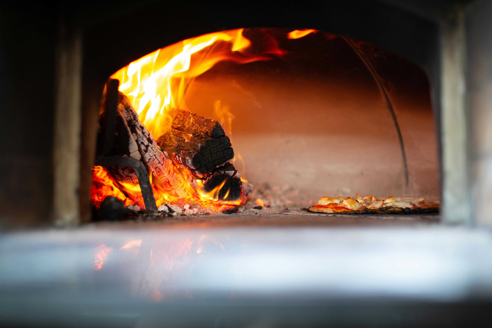
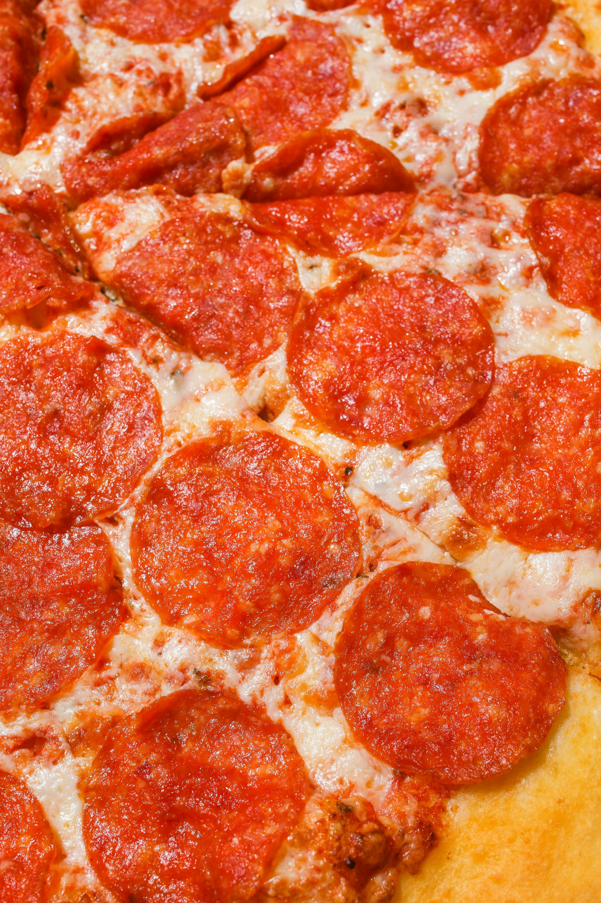
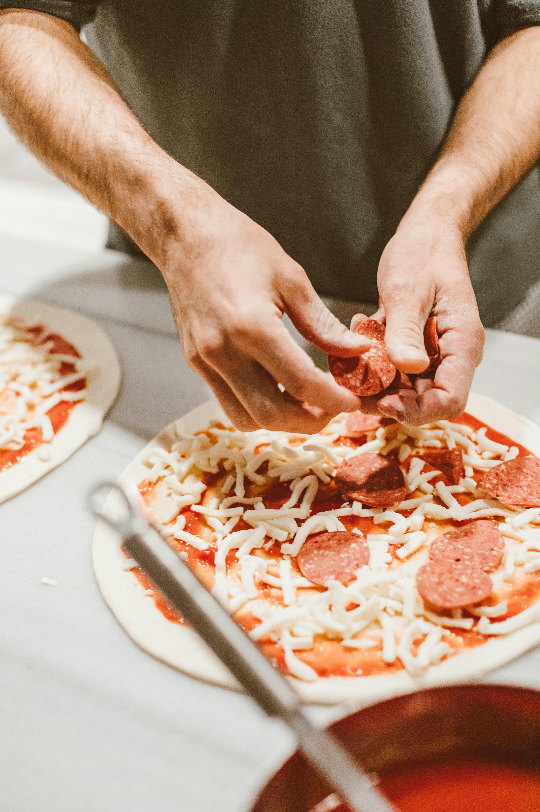
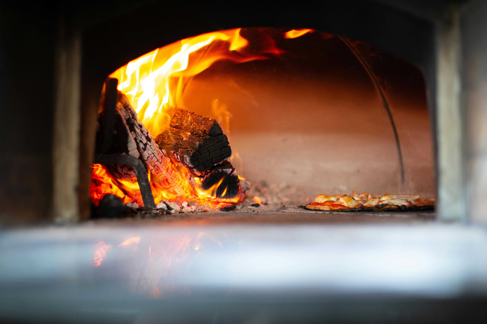
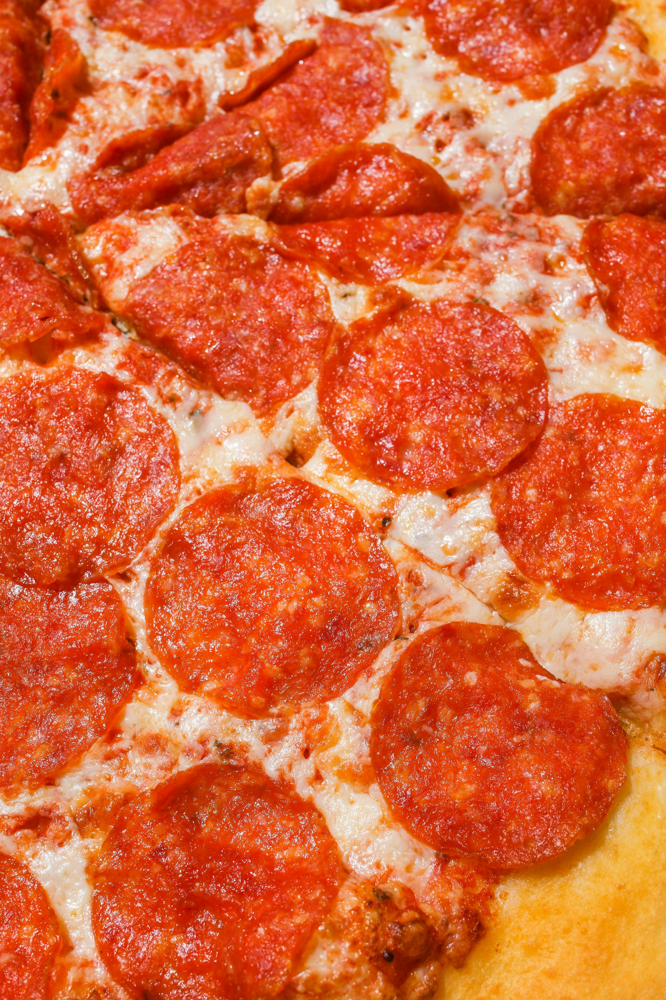
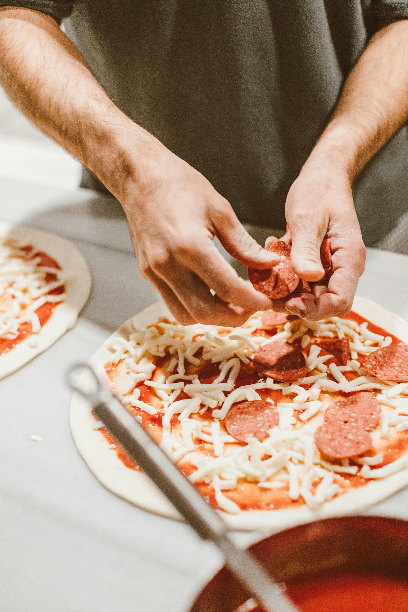

Non Solo Pizza, siamo molto più di una semplice pizzeria: siamo una famiglia che crede nel valore della tradizione, nella qualità degli ingredienti e nel piacere del buon cibo. Oltre alle nostre pizze, preparate con passione e attenzione, offriamo anche una selezione di specialità fritte che portano in tavola sapori autentici e irresistibili.
Non Solo Pizza è il luogo dove passione, famiglia e territorio si incontrano, per offrirti un’esperienza autentica e indimenticabile.
 




